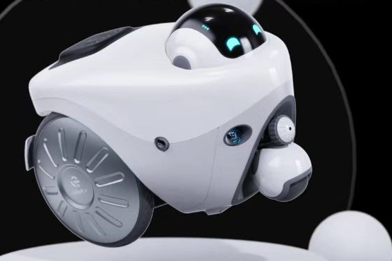
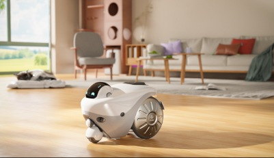

Master’s coursework · Team project
BUGOFF-BOT
A household pest-control robot concept.


BUGOFF-BOT is a household robot concept that brings together pest detection, navigation, and capture with a companion app. The design explores a more convenient way to monitor and manage pest control at home, considering how the robot’s form, maintenance, and interface could reduce direct contact with pests and simplify everyday use.